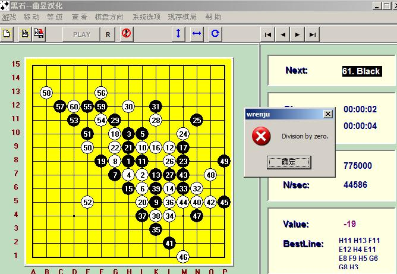
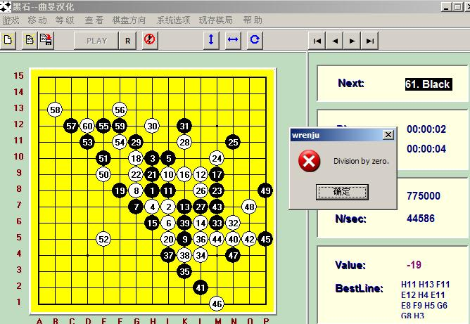

收集能把黑石下爆的变化
#1 收集能把黑石下爆的变化作者：wrwak 发表时间：2009-3-13 17:31:07
如题 爆的意思 是黑石 出现错误无法思考
爆的意思 是黑石 出现错误无法思考［本站用户 有志青年 于 2009-3-14 7:19:08 花5个金币送您鲜花一朵］
#2 Re:收集能把黑石下爆的变化作者：千羽鹤 发表时间：2009-3-13 17:34:44
。。。。。。。原来是说这个#3 Re:收集能把黑石下爆的变化作者：wrwak 发表时间：2009-3-13 17:37:06
步数不要超过50手哈 否则也不能实战#4 Re:收集能把黑石下爆的变化作者：江南新绿 发表时间：2009-3-13 19:18:59
还以为你要重写黑石代码呢#5 Re:收集能把黑石下爆的变化作者：自来水 发表时间：2009-3-15 20:31:46
LZ要干什么……这种情况我碰到不少，不过50手内的基本没有
如果是对付黑人，……不对不对，LZ是想完善自己这个黑人？？？
黑石的BUG其实蛮无聊的……
一般那种出错的变化黑石不太会自己下出来，往往是给他一个怪谱让他拆，然后会出错
说那么多我还是来提供一个变化，虽然实战肯定没有，但是对于寻找软件的BUG还是有帮助的
最简单的，整个棋盘摆满黑白八卦……嘿嘿，他就颓了
#6 Re:收集能把黑石下爆的变化作者：wd1988 发表时间：2009-3-16 8:59:09
楼上，他不会崩溃的，他会使劲找活三。。。#7 Re:收集能把黑石下爆的变化作者：wd1988 发表时间：2009-3-16 9:03:23
这个变化，我的怎么没爆？#8 Re:收集能把黑石下爆的变化作者：wrwak 发表时间：2009-3-16 16:03:09
我就是要对付黑人
#9 Re:收集能把黑石下爆的变化作者：自来水 发表时间：2009-3-17 21:04:33
原来是要对付黑人……ＬＳ思路似乎有点极端了吧，自己棋力又不差，再说境界高的黑人估计撞不到你的出错圈套里……
反正本人不纠结与此类问题了